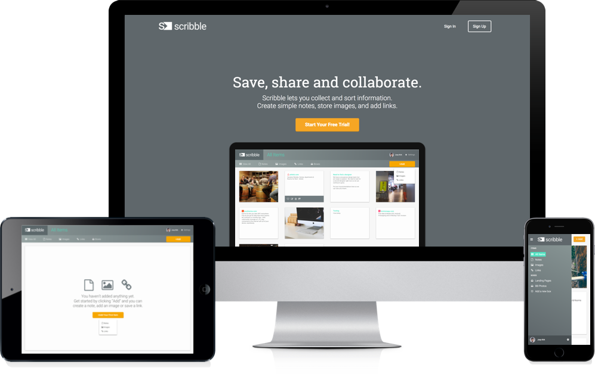

Made to help busy people keep up the pace by allowing them to store information and collaborate online in an organized, easily accessible way.
UI/UX Design, Front-End Developent
Studies suggest a person has an average of 60 thousand thoughts a day (Bruce Davis, Ph.D.). Thats one thought per second in every waking hour, which means it is impossible to remember every good idea we have, where we placed that article we wanted to read earlier, or which vacation spot had that cute little restaurant we want to visit in 2020. With a few simple clicks, Scribble acts as an extension of the user's brain by helping us place, retrieve, and share information with ease.
With user experience surveys, I learned many people saving content online, bookmark items in their browser. With many saved items, this process quickly becomes difficult to manage because there isn't a way to group content or organize the information bookmarked in a person’s browser.
Another critical component I explored was how people liked to take notes. It became clear we needed to enable an easy way for users to jot down information in categories as if they were interacting with their own smartphone or notebook.
Most people use smartphone apps or pen and paper to write notes. Those who use pen and paper reported liking how quick and easy it to "scribble" down information. Saving, creating and sharing information, with quick accessiblity became a clear need.
After reviewing scribble's competitors, I determined that rebranding Blocbox to Scribble would be necessary as all competitors strive to portray how easy their platform are to use. Scribble’s name came about to reflect that ease of use. It’s easy to scribble down a note or an idea and save it for later refinement. Scribble is meant to enable that same freedom with added instantaneous organization so that a user's saved items never gets lost.
Developing user personas revealed most people need help organizing their daily content at work and at home. People also shared frustration about current practices that didn't allow them to share and view content from all devices easily. As a result moving locations and sharing information with others seemed like it was wasting time.
After determining user needs, the largest challenge for the design process was developing a navigation system that was simple and easy to use. After testing several wireframe iterations and mockups, I determined that getting rid of some attributes for the initial launch of this site was necessary in order to simplify my design.
I also went with a horizontal navigation system because users performed intended tasks more efficiently that way over the vertical prototypes. Overall, the user testing process revealed people were quite intrigued and happy with the design.
Creating this site from the bottom up was a great learning experience. Being that this is the first website I have created, I am proud of the result. I was able to create solutions for navigational inefficiencies quickly and effectively using the design process bloc taught me.
Although tools in the final design are still limited, it created lots of excitement among potential users. Revising this application, I’d create a way for users to search information using key words. I’d also spend more time styling content and incorporating more opportunities for users to edit their space.
Although this project was a success, I still have a lot more to learn. I will take the process I underwent for designing this website and apply it to future designs as I continue to build.